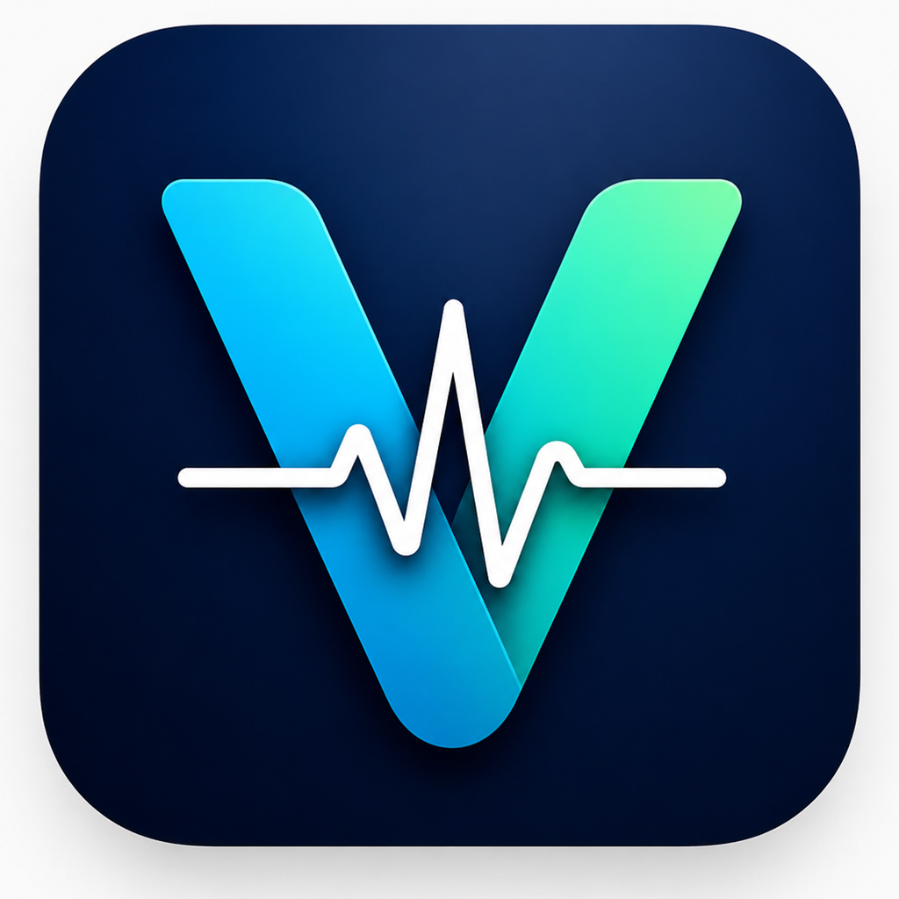

Blood pressure
Save systolic, diastolic, pulse, time of day, notes, and target status.

VitalTrackPersonal health tracking
A calm mobile app for blood pressure, blood sugar, medicine reminders, history, and reports you can bring to your next checkup.
What it does
VitalTrack keeps frequent logs easy to add and easy to review, with status chips, trends, reminders, and saved profile context.
Save systolic, diastolic, pulse, time of day, notes, and target status.
Track fasting, before-meal, after-meal, and random readings in your unit.
Schedule repeat reminders, review the week, and mark each dose as taken.
Review recent readings, grouped timelines, averages, highs, and trends.
App preview
Switch between the main parts of VitalTrack and see how the app organizes the most important information.
The dashboard shows the latest blood pressure, blood sugar, and medicine status with quick actions for new logs.
How it fits your day
Use large actions for BP, sugar, and medicine instead of searching through menus.
See grouped history, recent averages, highest readings, and status labels.
Choose a date range and export a focused PDF or CSV for backup or review.
Reports
VitalTrack includes doctor visit, weekly, monthly, BP, blood sugar, and medicine reports with flexible date ranges.
Safety and privacy
VitalTrack is for personal tracking only and is not a medical device.
VitalTrack is designed for personal logs, reminders, and exported summaries. It is not a medical device and does not replace advice from a healthcare provider.
The app stores tracking context locally and exports files only when you choose to save or share them.